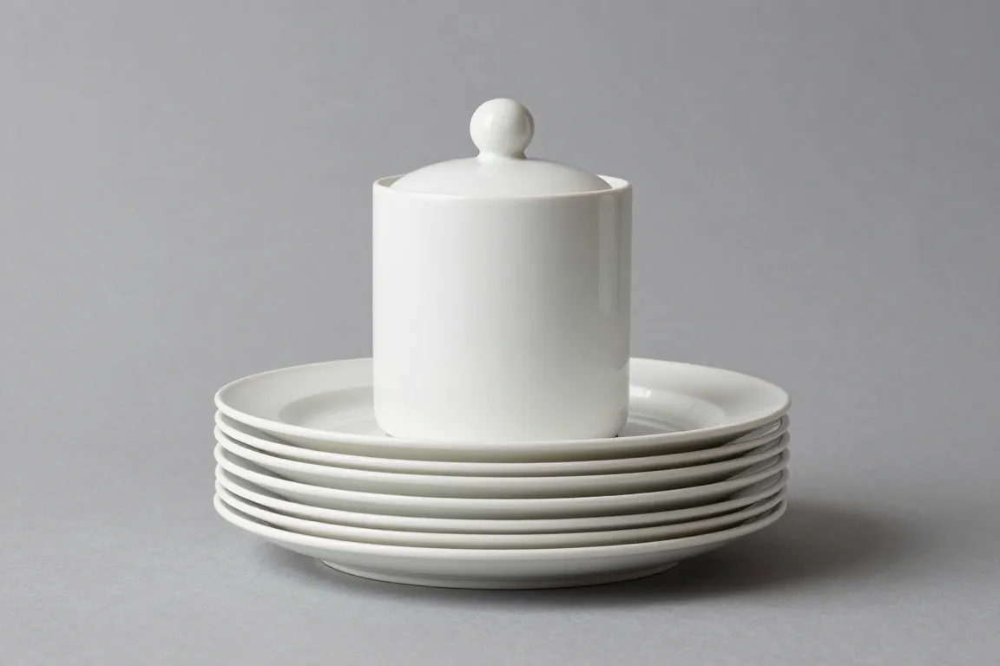

керамика · 1930–1960 · также: Функциональный фарфор, Посуда новой вещественности (Neue Sachlichkeit), Модернистский белый фарфоровый сервиз
Простой белый фарфор, сделанный для фабрики, в простых сплошных формах. Дизайнеры отказываются от орнамента и золота и придают сервизу форму, которую можно ставить стопкой, из которой хорошо наливать и которую дёшево делать.

Главная идея
Сервиз — инструмент стола: несколько простых тел, белых, подходящих друг к другу и удобных в пользовании.
Принципы дизайна
Стройте каждую вещь из нескольких простых тел: цилиндра, шара, плоского диска.
Держите поверхность белой и без декора и пусть вид несут глазурь и форма.
Делайте вещи так, чтобы они ставились стопкой и вкладывались друг в друга, и сервиз занимал мало места в шкафу.
Ставьте ручку и носик по применению: рука подходит к ручке, а край не капает.
Сводите сервиз к 20–30 формам, обслуживающим все трапезы.
Отливайте вещь в форму, чтобы каждая была такой же, как следующая.
Наносите лишь одну тонкую цветную линию печатью или поясом, когда покупатель этого просит.
Антипаттерны
Золотой край с завитками и цветами
Лепной рельеф из листьев и раковин
Роспись цветами вручную во многих цветах
Толстая выточенная вручную стенка с видимым следом инструмента